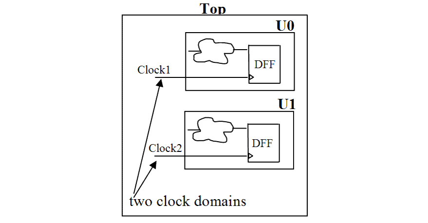

| Description | This rule fires when Leda detects more than one clock domain in a design module. Separating modules according to clock domains improves the timing performance of the design. |
| Policy | DESIGN |
| Ruleset | PARTITIONING |
| Language | VHDL/Verilog |
| Type | Hardware |
| Severity | Error |
This is an example of valid Verilog code, followed by a circuit diagram that illustrates the correct approach:
module ntl_par13_top (Clock1,Clock2 Reset, Din1,Din2, Dout1, Dout2); ... Sub_clock1 U0(.Clock(Clock1), .Reset(Reset), .Din(Din1), .Dout(Dout1)); Sub_clock2 U1(.Clock(Clock2), .Reset(Reset), .Din(Din2), .Dout(Dout2)); ... endmodule